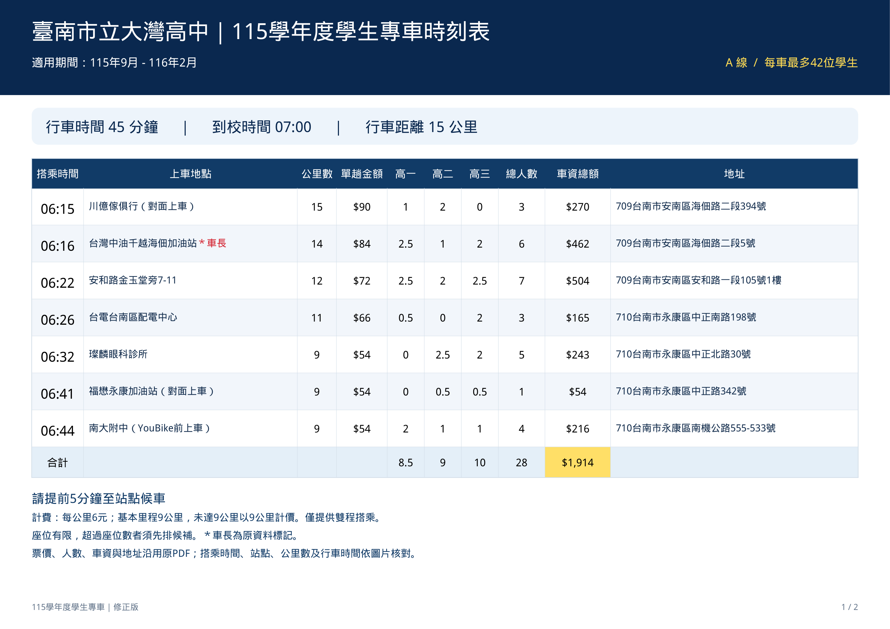
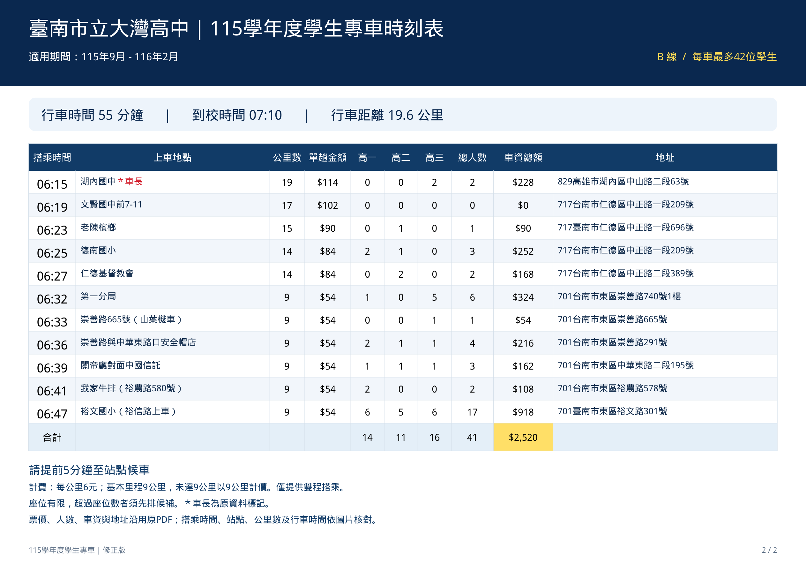
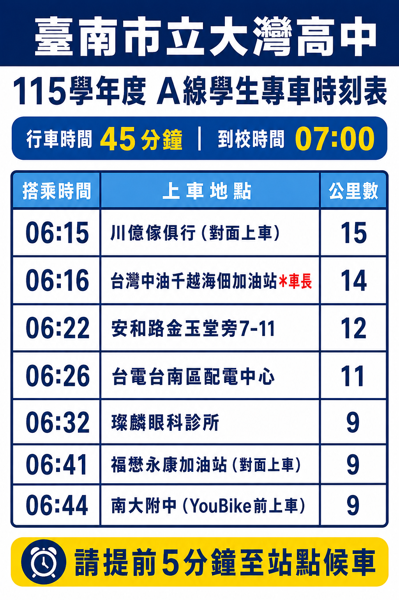
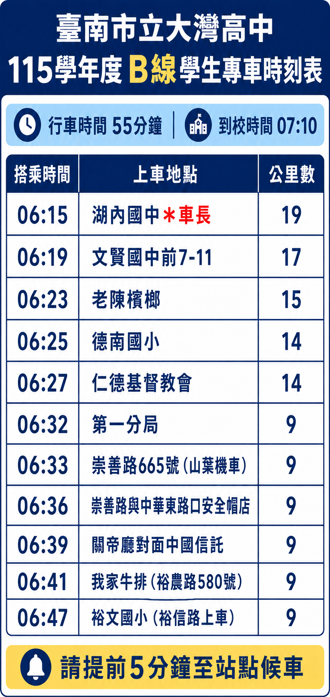

全部上車站點
18 站先選路線，或輸入居住地查詢候選站點。
出發位置與候選站地圖
紅色：出發位置｜藍色：A 線｜綠色：B 線。可放大地圖後點選位置，再確認出發點。排名依地標直線距離，請核對道路及上車側。
搭乘與費用說明
修正版PDF載明：僅提供雙程搭乘；每公里6元，基本里程9公里，未達9公里以9公里計價。本站列出PDF的單趟金額供參考，不代表可購買單程；實際雙程收費與座位安排請向學校確認。
每車最多42位學生，超過座位數需候補。查詢結果不代表已取得搭乘資格或保留座位。
適用期間：115年9月－116年2月。A線行車45分鐘、07:00到校；B線行車55分鐘、07:10到校。
資料來源與修正版時刻表
本站依本次提供的五份檔案更新：修正版PDF、A／B線修正版完整時刻表，以及A線45分鐘／B線55分鐘候車時刻表。搭乘時間、上車地點與公里數依候車時刻表核對，地址與單趟金額依修正版PDF補充。
德南國小地址與其他站重複、南大附中門牌範圍不明、我家牛排578／580號仍有差異，已於站點註明。地圖是名稱／地址搜尋結果，不代表已核實的精確上車座標；實際路線與收費請向學校確認。
下載 A 線修正版完整時刻表


下載 B 線修正版完整時刻表


下載 A 線候車時刻表（行車45分鐘）


下載 B 線候車時刻表（行車55分鐘）

